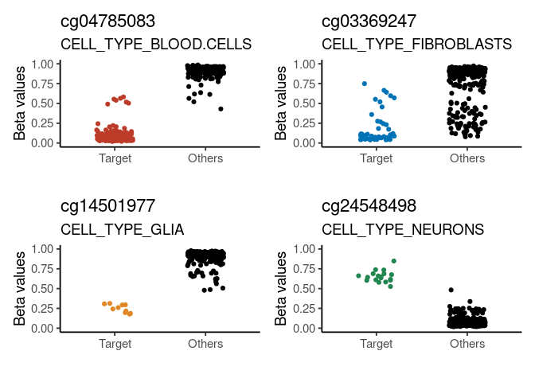
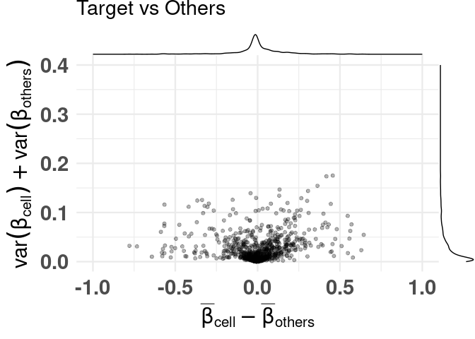
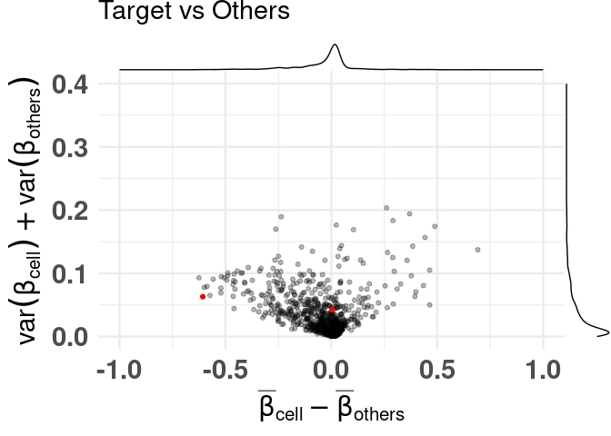
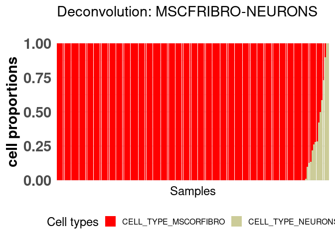
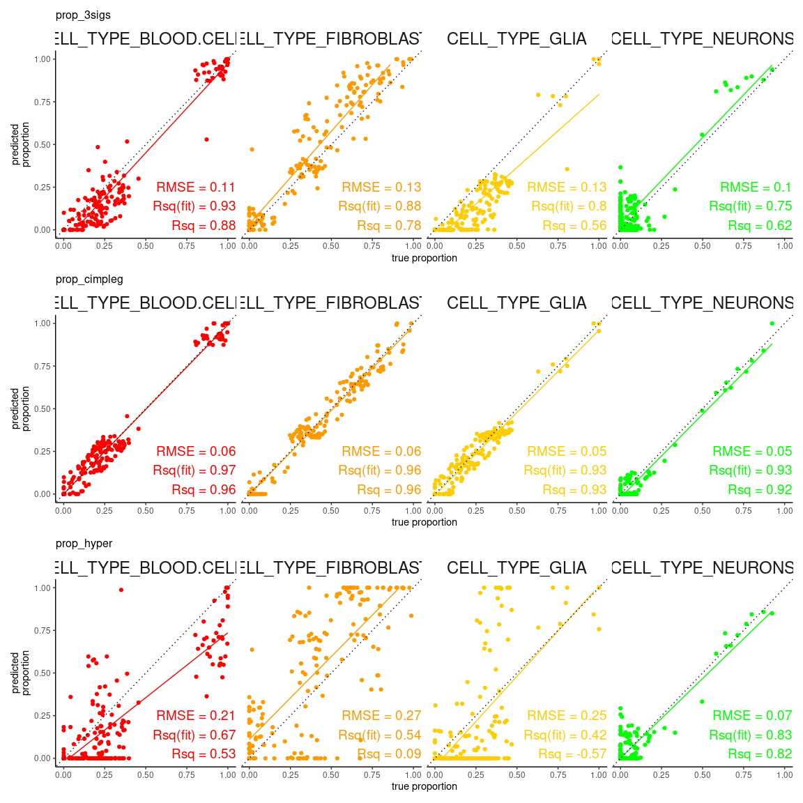
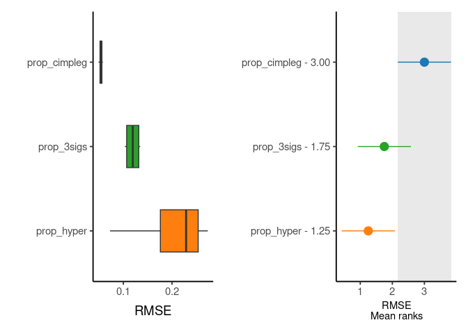

Installation
# Install directly from github:
devtools::install_github("costalab/CimpleG")
# Alternatively, downloading it and install it from a local source:
# - ie navigating through your system
install.packages(file.choose(), repos = NULL, type = "source")
# - ie given a path to a local source
install.packages("~/Downloads/CimpleG_0.0.4.XXXX.tar.gz", repos = NULL, type = "source")
# or
devtools::install_local("~/Downloads/CimpleG_0.0.4.XXXX.tar.gz")Getting started
library("CimpleG")
data(train_data)
data(train_targets)
data(test_data)
data(test_targets)
# check the train_targets table to see
# what other columns can be used as targets
# colnames(train_targets)
# mini example with just 4 target signatures
set.seed(42)
cimpleg_result <- CimpleG(
train_data = train_data,
train_targets = train_targets,
test_data = test_data,
test_targets = test_targets,
method = "CimpleG",
target_columns = c(
"neurons",
"glia",
"blood_cells",
"fibroblasts"
)
)
cimpleg_result$results
# check generated signatures
cimpleg_result$signatures
#> neurons glia blood_cells fibroblasts
#> "cg24548498" "cg14501977" "cg04785083" "cg03369247"Plot generated signatures
# adjust target names to match signature names
# check generated signatures
plt <- signature_plot(
cimpleg_result,
train_data,
train_targets,
sample_id_column = "gsm",
true_label_column = "cell_type"
)
print(plt$plot)
Difference of means vs Sum of variances (dmsv) plots
basic plot
plt <- diffmeans_sumvariance_plot(
data = train_data,
target_vector = train_targets$neurons == 1
)
print(plt)
adding color, highlighting selected features
df_dmeansvar <- compute_diffmeans_sumvar(
data = train_data,
target_vector = train_targets$neurons == 1
)
parab_param <- .7
df_dmeansvar$is_selected <- select_features(
x = df_dmeansvar$diff_means,
y = df_dmeansvar$sum_variance,
a = parab_param
)
plt <- diffmeans_sumvariance_plot(
data = df_dmeansvar,
label_var1 = "Neurons",
color_all_points = "purple",
threshold_func = function(x, a) (a * x) ^ 2,
is_feature_selected_col = "is_selected",
func_factor = parab_param
)
print(plt)
labeling specific features
plt <- diffmeans_sumvariance_plot(
data = df_dmeansvar,
feats_to_highlight = cimpleg_result$signatures
)
print(plt)
Deconvolution plots
mini example with just 4 signatures
deconv_result <- run_deconvolution(
cpg_obj = cimpleg_result,
new_data = test_data
)
plt <- deconvolution_barplot(
deconvoluted_data = deconv_result,
meta_data = test_targets,
sample_id = "gsm",
true_label = "cell_type"
)
print(plt$plot) ### this example is a little more advanced
### this example is a little more advanced
first lets create additional deconvolution results so that we can compare them
In this example, we’ll create two additional models made with CimpleG. One using only hypermethylated signatures, and the other using 3 CpGs per signature instead of just one.
set.seed(42)
cimpleg_hyper <- CimpleG(
train_data = train_data,
train_targets = train_targets,
test_data = test_data,
test_targets = test_targets,
method = "CimpleG",
pred_type = "hyper",
target_columns = c(
"neurons",
"glia",
"blood_cells",
"fibroblasts"
)
)
#> Training for target 'neurons' with 'CimpleG' has finished.: 0.475 sec elapsed
#> Training for target 'glia' with 'CimpleG' has finished.: 0.41 sec elapsed
#> Training for target 'blood_cells' with 'CimpleG' has finished.: 0.435 sec elapsed
#> Training for target 'fibroblasts' with 'CimpleG' has finished.: 0.395 sec elapsed
deconv_hyper <- run_deconvolution(
cpg_obj = cimpleg_hyper,
new_data = test_data
)
set.seed(42)
cimpleg_3sigs <- CimpleG(
train_data = train_data,
train_targets = train_targets,
test_data = test_data,
test_targets = test_targets,
method = "CimpleG",
n_sigs = 3,
target_columns = c(
"neurons",
"glia",
"blood_cells",
"fibroblasts"
)
)
#> Training for target 'neurons' with 'CimpleG' has finished.: 0.37 sec elapsed
#> Training for target 'glia' with 'CimpleG' has finished.: 0.386 sec elapsed
#> Training for target 'blood_cells' with 'CimpleG' has finished.: 0.55 sec elapsed
#> Training for target 'fibroblasts' with 'CimpleG' has finished.: 0.352 sec elapsed
deconv_3sigs <- run_deconvolution(
cpg_obj = cimpleg_3sigs,
new_data = test_data
)remember this is just an example, the results themselves are meaningless!
deconv_3sigs$prop_3sigs <- deconv_3sigs$proportion
deconv_hyper$prop_hyper <- deconv_hyper$proportion
deconv_result$prop_cimpleg <- deconv_result$proportion
dummy_deconvolution_data <-
deconv_result |>
dplyr::mutate(true_vals = proportion + runif(nrow(deconv_result), min=-0.1,max=0.1)) |>
dplyr::select(cell_type,sample_id,prop_cimpleg,true_vals) |>
dplyr::left_join(deconv_hyper |> dplyr::select(-proportion), by=c("sample_id","cell_type")) |>
dplyr::left_join(deconv_3sigs |> dplyr::select(-proportion), by=c("sample_id","cell_type")) |>
dplyr::mutate_if(is.numeric, function(x){ifelse(x<0,0,x)}) |>
dplyr::mutate_if(is.numeric, function(x){ifelse(x>1,1,x)}) |>
tibble::as_tibble()first we can check how the true values compare against the predicted values
scatter_plts <- CimpleG:::deconv_pred_obs_plot(
deconv_df = dummy_deconvolution_data,
true_values_col = "true_vals",
predicted_cols = c("prop_cimpleg","prop_hyper","prop_3sigs"),
sample_id_col = "sample_id",
group_col= "cell_type"
)
scatter_panel <- scatter_plts |> patchwork::wrap_plots(ncol=1)
print(scatter_panel)
now, more interestingly, we can see in detail and rank one of the measures used to evaluate the deconvolution results
rank_plts <- CimpleG:::deconv_ranking_plot(
deconv_df = dummy_deconvolution_data,
true_values_col = "true_vals",
predicted_cols = c("prop_cimpleg","prop_hyper","prop_3sigs"),
sample_id_col = "sample_id",
group_col= "cell_type",
metrics = "rmse"
)
rank_panel <- list(rank_plts$perf_boxplt[[1]],rank_plts$nemenyi_plt[[1]]) |> patchwork::wrap_plots()
print(rank_panel)